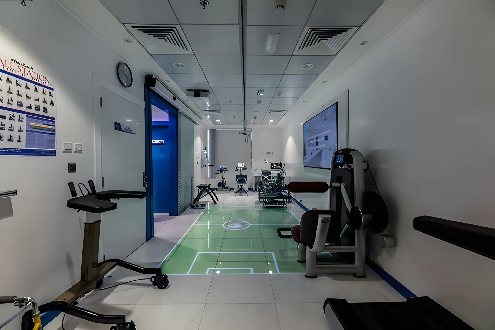

Eleven treatments and six rehabilitation programmes, all under one roof on Al Khan Corniche. Your physiotherapist chooses from these after your assessment.
The MLS laser sends two therapeutic wavelengths at once to work on pain, inflammation and swelling together, with a low risk of heat damage to the skin.
Low-level laser with high power density, no needles break the skin
Fine laser probes are placed on the skin and aimed precisely at the injured tissue, from several sides at once, so deeper areas are reached. It is painless and non-invasive.
Shockwaves improve blood flow and metabolism in the treated area and start the body's own repair. Each session is short, and a high share of treatments succeed after only a few sessions.
Traction gently lowers the pressure between the vertebrae. That takes pressure off the nerves and improves blood and oxygen supply. It can bring immediate pain relief, and a structural improvement in the long run.
Helps with
Sciatica and nerve root compression
Disc herniation
Joint stiffness
Spinal deformities
What it does
Less back and neck pain
More range of motion in the spine
05
Functional magnetic stimulation
Tesla 2.5
A magnetic field passes through clothes, skin, muscle and bone and turns into a small electrical field deep in the tissue. It activates or relaxes muscles and eases pain, with no contact on the skin.
Helps with
Degenerative and rheumatoid arthritis
Lumbago, neck pain, sciatica
Peripheral nerve damage, neuropathies
Frozen shoulder
Rehab after fractures
Muscle spasm and atrophy
What it does
Reaches deep muscles
Works without touching the skin
Not suitable if you have: epilepsy, a pacemaker, any metal implant, cancer, severe heart rhythm problems, active lung disease or an inflammatory disease, or if you are pregnant. Tell us at your assessment.
06
Cryoultrasound and the HOMING system
Cold therapy with ultrasound · movement and balance training with feedback

Cryoultrasound combines cold and ultrasound in one painless treatment for muscle and tendon injuries, at every stage from fresh to long-standing. The HOMING system measures how you move and trains you with sound and screen feedback, with exercise games and virtual settings. It also checks your risk of falling.
Cryoultrasound helps with
Sports, muscle and tendon injuries
Knee pain, plantar fasciitis
Tennis and golfer's elbow
Bone and muscle bruises
After surgery
HOMING helps with
Frozen shoulder, shoulder instability
After knee or hip replacement
Ligament reconstruction and laxity
Stroke and hemiplegia
Balance and posture
07
Electrotherapy and ultrasound
Combination unit · Sonopuls StatUS
Electrotherapy and ultrasound can run side by side in the same session. Together they ease pain and speed up repair after an injury. StatUS therapy suits treatments of up to 20 minutes where tissue healing is slow.
Helps with
Musculoskeletal pain, muscle weakness
Ligament injury
Bursitis, tendonitis, fasciitis
Joint stiffness and adhesions
Adhesions after surgery
What it does
Faster, better healing
Less muscle spasm
08
BTL combination therapy
Electric stimulation, ultrasound and laser · BTL HandsFree Sono
Electric stimulation keeps muscles working and stops them wasting after an injury, a stroke or a spinal cord injury. The HandsFree Sono head gives an even ultrasound dose over the whole area, without a hand-held probe.
Helps with
Muscle spasm and pain
Weak muscles after injury
Tendonitis and fasciitis
Post-surgical adhesions
What it does
Relieves pain, relaxes
Increases muscle power
09
Knee continuous passive motion
Kinetec Spectra Kompanion
A CPM machine moves the joint for you, through a controlled range that we increase over time. It is used in the first phase after surgery or trauma to control pain and swelling and protect the repair. This one runs from a tablet, with extra modes for stretching and evaluation.
Used after
Knee replacement
ACL reconstruction
Soft tissue surgery or trauma
Stroke
10
Shoulder continuous passive motion
Kinetec Centura
A shoulder CPM that follows the natural movement of the joint, so it is comfortable and puts less stress on the shoulder. Sixteen programmes can be set in advance.
Used after
Rotator cuff repair
Acromioplasty and capsulotomy
Total shoulder replacement
Post-traumatic arthritis with stiffness
Stroke (hemiplegia)
11
Compression therapy
Graduated compression for arms and legs
Graduated pressure around the limb helps the veins close their valves and pushes blood back to the heart. Heavy, aching, swollen legs and arms feel lighter.
Helps with
Lymphatic problems after tumour surgery
Phlebitis, after vein surgery
Varicose veins, swelling, leg ulcers
Prevention in pregnancy and on long trips
12 Rehab gym
12
Rehabilitation programmes
In the rehab gym, with manual and thermal therapy
Hands-on manual therapy, heat therapy and exercise in our rehab gym, planned around your goals.
Programmes
Sports injuries rehabilitation
Spine and joints rehabilitation
Post-surgical rehabilitation
Neuro rehabilitation
Geriatric rehabilitation: arthritis, osteoporosis
Paediatric rehabilitation: neuromuscular and musculoskeletal conditions
Insurance plans we bill directly
Direct billing with these insurers and TPAs, on the networks listed. Your plan isn't here? Call us before your visit, or pay by cash or card and claim it back with our receipt and English medical report.
Insurers and accepted networks
Daman
NW 1 and NW 2 networks, including Thiqa C1, SEHA plans, Al Aman 2 and 3, ADNOC plans